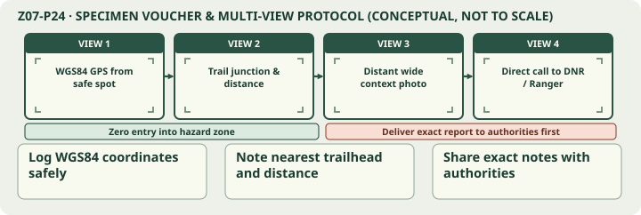

Z07-P24 · Traps and snares · New manuscript
Non-Contact GPS and Landmark Documentation of Hazards
Capture accurate, actionable field coordinates and visual context so rangers or Conservation Officers can locate hazards rapidly.
When it applies · Reporting illegal sets, injured wildlife, or hazardous derelict gear.
Equipment · Offline GPS/phone coordinates, notebook, camera zoom.

Actions
- Record decimal-degree WGS84 GPS coordinates (or clear quadrangle/trail-junction distance) from a safe standing point without stepping into the hazard zone.[L09, N02]
- Note simple permanent landmarks—trail name, mileage post, stream crossing, or distinct bend—alongside date, time, and a distant wide photo so responders find the exact spot quickly.[L09]
- Share exact hazard coordinates strictly with Minnesota DNR, park rangers, or local authorities rather than posting vague warnings online without official notification.[L09, H15]
Failure recognition · Reporting "somewhere down by the creek" without coordinates or landmarks prevents Conservation Officers from finding injured wildlife or illegal gear.[L09]
Verify · Saved record contains WGS84 coordinates, trail distance, date/time, distant context photo, and confirmed agency contact.[L09]
Stop or change course · Stop moving closer just to get a sharper photo; distant context plus GPS is safer and fully actionable.[L09]
Evidence and editorial notes
- H15 · Minnesota DNR · Turn In Poachers (TIP) and Conservation Officer Reporting (Current web edition)
- Section: Turn In Poachers (TIP) and wildlife incident reporting · Conditions: Suspected wildlife violations, injured game, or unsafe incidents
Support: Observe from a safe distance, record location, time, descriptions, and license plates without confronting suspects, and report to MN DNR TIP or Conservation Officers.
Limitations: Do not pursue armed or hostile individuals or disturb physical evidence. · Conflicting evidence: None noted.
Editorial note: Defines Z06/Z07 non-confrontational incident reporting. · Specialist reviewer: Conservation enforcement reviewer
Primary source · checked 2026-11-25 - L09 · Minnesota DNR · Turn In Poachers (TIP) and Conservation Officer Reporting (Current web edition)
- Section: Reporting illegal, unmarked, or abandoned traps and snares · Conditions: Encountering suspected unlawful, out-of-season, or unsafe sets
Support: Do not touch, spring, or steal equipment; photograph from a safe distance with location coordinates and report to MN DNR TIP or local law enforcement.
Limitations: Tampering with lawful traps can be illegal and risks severe hand injury from stored spring energy. · Conflicting evidence: None noted.
Editorial note: Protects bystanders from injury and legal liability. · Specialist reviewer: Conservation enforcement reviewer
Primary source · checked 2026-11-25 - N02 · USGS · Topographic Map Symbols (agency PDF)
- Section: Topographic Map Symbols > Contours, Water, Vegetation and Boundaries · Conditions: Interpreting standard USGS 1:24,000 and US Topo map sheets
Support: Contour spacing indicates slope steepness, index contours give elevation values, blue features mark water/wetlands and standard symbols distinguish roads, trails, cliffs and marshes.
Limitations: Small terrain hazards (boulders, undercut banks, fallen timber, thin ice) fall below map contour interval resolution. · Conflicting evidence: None; anchors terrain and contour interpretation cards.
Editorial note: Explains contour reading alongside map-resolution limitations. · Specialist reviewer: Cartography and search and rescue
Primary source · checked 2026-11-24
Source lineage · New manuscript (Z07 P18 incident reporting) · Classification · New manuscript.